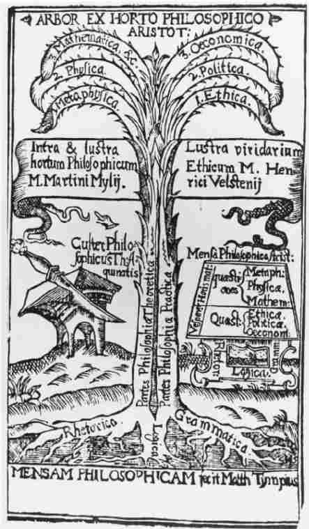

希腊最发达的学科是几何学——实际上，欧几里得在好几个世纪中都是几何学的代名词。尽管欧几里得的著作是在亚里士多德死后完成的，但欧几里得是以前人的研究为基础的，前辈们已经对后来成为欧几里得几何学之显著特征的问题进行了思考。总而言之，欧几里得几何学是一个公理化的演绎系统：他选取一些简单原则，或者说公理，假设这些公理是他所研究主题中的基本原理；通过一系列极有说服力的逻辑演绎，他从这些公理中推导出所有其他几何原理。因此，几何由推导原理（或称为定理）和基本原理（或称为公理）组成。每个定理都在逻辑上由一个或多个公理推导而来，尽管经常要通过一系列冗长而复杂的推理获得。
由公理进行推导的系统——这一概念很简洁，具有智力上的吸引力。柏拉图就受到了吸引，并且提出，人类知识的整体可能是以某种方式由一个单一的公理系统推导而来的：所有科学定理可能都是由一小组基本原理逻辑推理而来的。因此，知识是系统的、统一的——说它是系统的，因为知识可以以公理的形式呈现；说它是统一的，因为所有原理都能从单个的一组公理中推导出来。
公理化的力量对亚里士多德造成的印象不比柏拉图浅；但他不相信柏拉图乐观的断言：所有知识都能建立在单一一组公理之上。因为他脑海里留有同样深的印象：各学科很显然是相互独立的。数学家和医生、生物学家和物理学家在不同的领域工作，讨论不同的对象，采用不同的方法。他们的学科很少交叉。不过，亚里士多德还是觉得需要系统性：即便人类知识不是统一的，它也不是相互毫无关联的多元体。“从一方面来看，不同事物的因和法则不同；但从另外一方面来看，如果论起一般性并用类推的方法，它们又是相同的。”几何公理与生物法则相互独立，他们是在“类推上”相同的；也就是说，所有学科的概念组织和形式结构是相同的。
亚里士多德把知识分为三大类：“所有思想要么是实践性的，要么是生产性的，要么是理论性的。”生产性科学是关于制造物品的知识，如美容术和农业耕作、艺术和工程技术。亚里士多德本人对生产性知识没有多少要阐释的。《修辞学》和《诗学》是他留传下来仅有的两本关于生产性知识的书。（“诗学”这个词在希腊语里是poiêtikê，该词在“生产性科学”短语中被翻译成“生产性”。）实践性科学主要关乎行动，或更确切地说是关于我们在不同环境下，不管是私人事务还是公共事务中应如何行动的知识。《伦理学》和《政治学》是亚里士多德对实践性科学的主要贡献。
当知识的目的既不是为了生产也不是为了行动，而仅仅是为了讨论真理时，就是理论性知识。理论知识包括我们现在认为是科学的所有知识；在亚里士多德看来，它显然地包含了人类知识总和的最大部分。它可细分为三类：“理论哲学有三类——数学、自然科学和神学。”和柏拉图的其他学生一样，亚里士多德十分通晓同时代的数学；《形而上学》的第十三和第十四卷就是对数的本质的敏锐论述；但他不是一个专业数学家，也不妄称对该学科有过推动作用。
自然科学包括植物学、动物学、心理学、气象学、化学和物理学。（我译做“自然科学”的希腊语是phusikê，该词经常被错误地音译为“物理学”。亚里士多德的《物理学》就是关于自然科学的专题著作。）亚里士多德认为自然科学的研究对象有两大特征比较突出：它们能够变化或运动（不像数学的研究对象是静止不变的）；它们“个别地”存在或以自身的名义而存在。（第二点将在以后的一章中详细探讨。）亚里士多德一生的大部分时间都致力于对这些对象的研究。
不过，自然科学并非科学之最。“如果除了自然物质之外没有其他物质，自然科学就是基本科学；但如果存在毫不变化的物质，研究这类物质的科学就要优先，就会成为第一位的哲学。”亚里士多德赞同柏拉图的观点，认为存在这种不变的物质，并称这样的物质为神性物质。对这类物质的研究也许就被称为神学，或神性物质科学。神学比自然科学要更高级：“理论科学比其他科学更优越，而这门理论科学又比其他理论科学更优越。”但是“神学”这个词应该谨慎解释：我将在后面的一章里对亚里士多德的神性稍作阐释；这里说一点就够了：他通常把神性物质等同于天体部分，因此“神学”可能是天文学的一个分支。
有两样亚里士多德极为关注的事物似乎没有纳入他的分类网络：形而上学和逻辑。它们应被放在科学系统的什么位置呢？两者似乎都是理论科学，亚里士多德在某种意义上认为它们都与神学一样。
按亚里士多德的说法，“有一种科学，它研究的是作为存在的存在物（beings qua being），以及以自身的名义归属于某类存在的事物”。（这一科学常被等同于形而上学，或至少等同于形而上学的一个主要部分；亚里士多德在《形而上学》中对之进行了研究。可是亚里士多德从不使用“形而上学”这个术语，“形而上学”这个书名从字面意义来看，是指“自然科学的后续科学”。）短语“作为存在的存在物”有种吸引人的神秘光环，许多学者猜测它指的是某种深奥而抽象的东西。［这种猜测得到一种常见的误译的支持：亚里士多德的表述被译为单数，成了“作为存在的存在”（being qua being）。］实际上，亚里士多德所指的事物既不抽象也不深奥。“作为存在的存在物”并非一种特殊的存在等级或类别；事实上根本不存在“作为存在的存在物”。当亚里士多德说“有一种科学研究的是作为存在的存在物”时，他指的是有一种科学研究存在物，并且作为存在而研究它们；也就是说，有一种科学研究存在的（exist）事物［并非被称为“存在”（being）的某种抽象物］，并作为存在（existing）而研究它们。
“作为”（qua）这个小词在亚里士多德的哲学中起着重要作用。该词并不神秘。《米卡多一家》中的总管大臣身兼数职，同时担当财政大臣和柯柯的私人秘书。他在不同职位上有不同的态度。作为财政大臣，他力劝柯柯和新娘举办一个节俭的婚礼；而作为一个私人秘书，他则建议大肆挥霍。他作为 财政大臣或身肩财政大臣的职务，却又作为 私人秘书或身肩秘书的角色做同一件事。在前一情形下，他的建议是出于国家的角度，而在后一种情形下，他的建议则是出于不同的考虑。相类似地，作为存在物（existent）而研究某物就是研究该事物中与其存在 （exsting）有关的特征——而非其他任何方面的特征；要在它“身肩存在的职务下研究它”。每个不研究虚构物的人都在研究“存在物”（beings），即存在的事物；研究“作为存在的存在物”的学者研究的是存在物的如下特征：由于存在物存在的事实而隶属于存在物的特征。
对“作为存在的存在物”的研究因此是极为宽泛的：所有存在的事物都在研究范围之内（比较一下昆虫学或音位学，各自研究昆虫和语音），所研究的特征绝对是每个事物（每个昆虫或每个音）都必须具有的特征。（因此《形而上学》的第十卷讨论的是成为一个 事物意味着什么。每样事物 都是一个 事物；相比之下，只有一些是单翅的或辅音的。）亚里士多德在《形而上学》的各卷中展开这种高度概括的研究。他的几部逻辑学作品，现存的和遗失的，也都进行了这种研究。
在亚里士多德看来，既然这种对“作为存在的存在物”的概括研究是第一位的哲学，因此它与神学是一样的。这很奇怪：我们也许要问，研究所有事物的科学怎么会等同于只研究某类具有高度优先性的事物的科学呢？亚里士多德预料到会有这样的问题。他提出，神学“因为是第一位的，所以是普遍的”。他似乎是指，如果你研究其他所有实体都赖以存在的第一位物质，那么你就无形地在研究所有 作为存在的存在物（existents qua existent）。不是每个人都认为这个说法有说服力；并且亚里士多德所说的第一位哲学有时被认为由两个截然不同的部分组成：一个是普通形而上学，研究作为存在的存在物；一个是特别的形而上学，研究事物的原则和原因。
至于逻辑，后来的哲学家就其在各学科中的地位和位置争论不休。一些人认为逻辑是哲学的一个“部分”——一个与数学和自然科学并列的分支学科。其他人，包括亚里士多德的追随者，则极力主张逻辑是哲学的一种“工具”——为哲学家和科学家所用，但其本身却不是他们研究的对象。（希腊语表示“工具”的单词为organon：这就是为何后来的亚里士多德派把亚里士多德逻辑学作品冠以《工具论》的总体书名。）还有些哲学家则更有说服力地主张逻辑既是哲学的一个部分，也是哲学研究的工具。

图8“亚里士多德本人在对事物进行分类时没有讨论逻辑的位置。”在文艺复兴时期，逻辑有时被视为亚里士多德哲学花园里智慧树的主根。
亚里士多德本人在对事物进行分类时没有讨论逻辑的位置。他主张，研究作为存在的存在物的学者会研究“被数学家称做公理的事物”或者“演绎的第一原则”；“因为它们属于存在的万物，而不是属于某个特定的、独立于其他事物的物类”。他还认为，逻辑学家“采用的形式与哲学家一样”，或者说讨论事物的范围与第一位哲学的研究者讨论的一样。毕竟，作为一种完全概括性学科的逻辑学，大概应该归类于形而上学或归类于研究作为存在的存在物的学科。但是在很多段文字中亚里士多德似乎在暗示：逻辑学不能这样归类；实际上，他在说逻辑学家“采用的形式与哲学家一样”时，随后立刻又补充说，然而他从事的是一个不同的领域。
亚里士多德所认为的人类知识结构可以用下图表示：